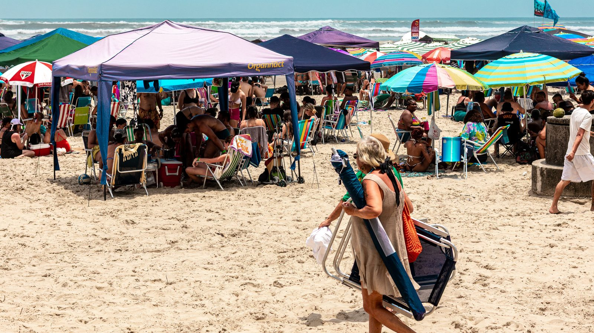

Itapema e Balneário Camboriú ocupam as duas primeiras posições do metro quadrado nacional
Itapema e Balneário Camboriú ocupam as duas primeiras posições do metro quadrado nacional.
4 de agosto de 2026A pesquisa da Fecomércio SC sobre o verão de 2026 já saiu, e agosto é quando hotel, restaurante e comércio definem preço para a próxima temporada. Vale olhar o que o número diz.
Em 30 segundos · Modo de Leitura, formato original Santa Informa
O gasto médio por grupo de visitantes no litoral catarinense caiu 16,4% no verão de 2026, de R$ 9.833 para R$ 8.224.
Mesmo assim, é o segundo maior valor da série histórica iniciada em 2013, e o faturamento do comércio ficou praticamente estável, com alta de 0,4%.
A satisfação seguiu alta: 78% dos visitantes se enquadram como promotores, aqueles que recomendariam o destino.
EconomiaPublicada em Redação Santa Informa

A Fecomércio SC divulgou em março a pesquisa Turismo de Verão no Litoral Catarinense de 2026. Trazemos o dado agora porque agosto é o mês em que hotel, pousada e restaurante fecham tabela de preço e contratam para a temporada seguinte.
O número que chama atenção é a queda do gasto médio por grupo: de R$ 9.833 no verão de 2025 para R$ 8.224 em 2026, recuo de 16,4%. Ainda assim é o segundo maior valor desde que a série começou, em 2013.
O faturamento geral do comércio ficou praticamente parado, com alta de 0,4% sobre 2025, e 20,9% acima da baixa temporada. Ou seja: o movimento veio, o gasto por grupo é que encolheu.
A retração se concentrou em setores específicos. Vestuário caiu 39,4%, alimentação fora do lar 26,6% e bares e restaurantes 23,1%. Já hotéis e pousadas cresceram 6,6%, com média de R$ 2.277 por check-in.
Na hospedagem, o aluguel de imóvel liderou com 40,2% da preferência, à frente de hotel e pousada. As plataformas digitais concentraram mais da metade das locações de temporada.
Estrangeiros foram 36,5% do total, e os argentinos sozinhos responderam por 29%. O gasto do argentino também recuou, 17,5%, para R$ 10.983. Ainda assim ele gasta acima da média geral.
O perfil é bastante estável: 85,2% vieram em família ou casal, 61,6% ganham de dois a oito salários mínimos, a idade média é 45 anos e 72,3% chegaram de carro próprio, embora o modal aéreo tenha crescido 46,9%.
O resumo de 30 segundos está no topo e a versão completa é o texto acima. Aqui ficam as três leituras da casa sobre o mesmo assunto.
Clara, a otimista
Gasto menor não significa turista insatisfeito. Setenta e oito por cento seguem recomendando o destino, e isso é zona de excelência em qualquer metodologia.
E o faturamento do comércio não caiu. O visitante trocou de cesta, não de destino. Hotel e pousada até cresceram. Quem souber ler onde a demanda migrou tem cinco meses para se posicionar.
Seu Prudêncio, o criterioso
Merece atenção a composição da queda. Vestuário caindo quase 40% e alimentação fora do lar 26,6% não é ajuste fino, é mudança de comportamento. O visitante passou a cozinhar no imóvel alugado em vez de almoçar fora.
E aí entra o dado de hospedagem: 40,2% em imóvel alugado, com plataforma digital intermediando mais da metade. Uma casa alugada tem cozinha, um quarto de hotel não tem. Os dois números conversam, e quem tem restaurante na orla precisa levar isso em conta antes de definir cardápio e preço.
Vale acompanhar também a dependência argentina: 29% do público num só país vizinho é concentração alta, e depende de câmbio, que ninguém aqui controla. Uma sugestão útil seria diversificar a comunicação para outros mercados enquanto o movimento está bom.
Feita a ressalva, faturamento estável num ano de retração de consumo no país inteiro é resultado sólido, e o litoral catarinense segue como segundo melhor da série histórica.
Caco, o sarcástico
O turista continua vindo, continua adorando, continua recomendando. Só parou de gastar. Praticamente um elogio com a carteira fechada.
Alugou casa com cozinha e fez macarrão em vez de pagar couvert. Descobriu o que morador daqui sabe desde sempre: comer na orla em janeiro custa o preço de uma diária.
E segue: 29% de argentino. A economia do litoral catarinense é, tecnicamente, um problema de câmbio com sotaque.
Fontes: Pesquisa Turismo de Verão no Litoral Catarinense 2026, da Fecomércio SC, divulgada em março de 2026, com repercussão em OCP News.
Itapema e Balneário Camboriú ocupam as duas primeiras posições do metro quadrado nacional.
4 de agosto de 2026A Selic em 14% muda a conta de quem financia imóvel no litoral.
6 de agosto de 2026O roteiro do litoral catarinense, cidade por cidade.
4 de agosto de 2026